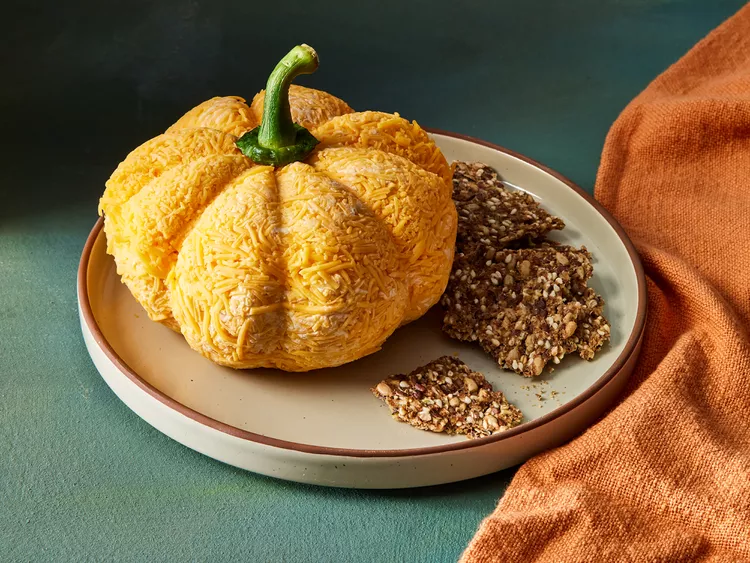

Pasticho

Ingredients:
- 2 (8-ounce) packages cream cheese, softened
- 1 tablespoon bottled hot pepper sauce
- 1 teaspoon paprika
- 1/2 teaspoon minced garlic
- 2 cups finely shredded yellow Cheddar cheese
- 1 stem from a bell pepper
- Crackers for serving
Steps to follow:
- Gather all ingredients.
- Combine cream cheese, hot pepper sauce, paprika, and garlic in a food processor. Process until well combined.
- Add 1 1/2 cups shredded cheese and process until cheese is finely chopped but still very visible.
- Sprinkle about 3 tablespoons of the remaining shredded cheese into a 4-inch pile on a large piece of plastic wrap, and top with a rounded scoop of the cheese ball mixture.
- Chill cheese ball in the refrigerator at least 3 hours before serving to allow flavors to meld and the cream cheese to become firm.